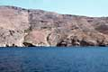
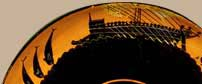

|  |
|
Mainland Greece is a mountainous land almost completely surrounded by
the Mediterranean Sea. Greece has more than 1400 islands. The country has
mild winters and long, hot and dry summers. |
The ancient Greeks were a seafaring people. They traded with
other countries around the Mediterranean. Many cities created settlements overseas
known as colonies.
| Greek cities were founded around the Black Sea, North Africa, Italy,
Sicily, France and Spain. Many tales and legends grew up about the strange
lands and creatures that could be found across the sea. |
|
 |
|
Follow Odysseus' travels to many fantastic lands
|
Explore maps of Ancient Greece
|
Investigate an ancient Greek shipwreck
|

|
|